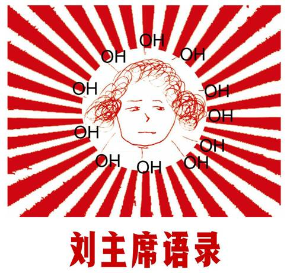
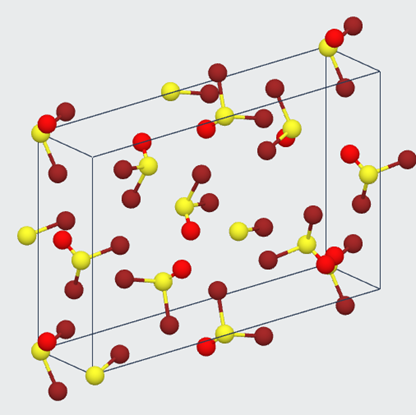
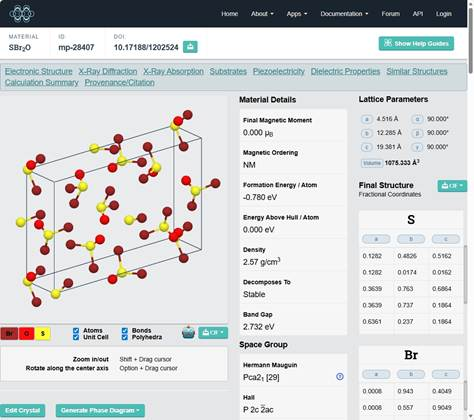

|
 |
葫芦岛市 辽宁省实验中学东戴河分校 伟大的导师，伟大的领袖，伟大的统帅，伟大的舵手，我们心中最红、最红的红太阳，万寿无疆、永远健康的，伟大的、光荣的、正确的、战无不胜的 刘主席 的思想精华 最高指示 上课！同学们好！ |
|
|
 |
 |
|
SBr2O（硫溴红①，又称二溴亚砜Thionyl bromide）分子结构式 ①红为球棍模型中氧原子的颜色。 |
SBr2O晶胞 |
1
上课！同学们好！（读作te�Jmn→hall�K�J�J→，国际音标[tʰə̃˦˥mən˥ˈxo˧˨˥]）
2
长脑子了吗？
3
这道题我上课不是讲过了吗？
4
这不是白痴问题吗？
5
这都不会吗？
6
这题不是送分题吗？
7
没过90的给我站起来！
8
没写作业的给我站起来！潘呈彬，给我记上！满三次的告诉你们班老师，叫家长来！
9
啥题都错啊？
10
啊�J→�K！这哈欠打得。夏健钧…不是，夏奥钧，给我到后边站着去！
11
我早就说过，你听讲态度有问题（老师，这不是俩灰的吗）你是色(shǎi,[ʂai̯˨˩])盲吗？
12
你不是自由人吗？
13
我之前在唐山教的时候……
14
我之前教过一个孩子，那孩子，上课就跟看球赛一样！
15
噢�J→�J�K→�K！这点自知之明都没有？坐那么稳当呢？小心下课我上一班找你们班老师去！
16
你们班不如一班，一班主动要求留作业！
17
你这卷一看就没好好写！你看我做这卷……
18
化�J�K学计算，是最�J�K有魅力的计算�K�J�K！
19
我留的作业一点也不多，一班咋就能写完呢？
20
化学考满分了吗？这么简单的卷都答不好？
21
一般来说是这样的，但是还有二般的情况。
22
我之前怎么讲的来着？
23
我看你这是选ABD来着？
24
谢锡朗的小球对大家还挺有用的呢。
25
小眼睛也不聚光啊？
26
那你不废材吗？连圆底烧瓶和平底烧瓶都分不清。
27
你一站起来我就舒服多了。
28
这个卷一班都有考满分的，你班最高才93。
29
我都不稀得看你的卷！
30
顶尖的学生怎么能犯这种错误呢？
31
你这化学一辈子都考不了90几啊。
32
这道题的原理不相当于1+1=2一样简单吗？
33
噢！怪不得你的化学学的那么好！
34
×××！赵子…赵禹墨！怎么上课还睡大觉呢？我就说你们班有问题！我带了这么多年的实验班就没见过这样的！
35
整的我这么温柔个人却跟你们嚷了真是。
36
弓粤鸣，上课又没听讲吧。
37
我看你这题写ABD来着，我记得清楚。
38
整的我连月考卷都不敢出难了。
39
啊！这咋能错呢？谁让你错的？
40
这题你说…实验班还错？
41
我感觉我选这题一点脑瓜都不费。
42
产物是催化剂，啊，你看人明朗。
43
啊~原来是窃听来着。
44
你考基础啥也不是。
45
啊~一群傻子。
46
给你送分你都接不着。
47
太让我伤心了。
48
弓粤鸣！用一个字形容你，知道是啥不？就是懒！
49
知不道？
50
你们两个班就跟不是一个老师教的似的。
51
我之前在北京培训(xìn,[ɕin˥˩])的时候……
52
那个老师带我逛清华北大的时候……
53
拆不拆。（强调性标准普通话，拼音chāibùchāi，国际音标[ʈ͡ʂʰai̯˥pu˥˩ʈ͡ʂʰai̯˥]）